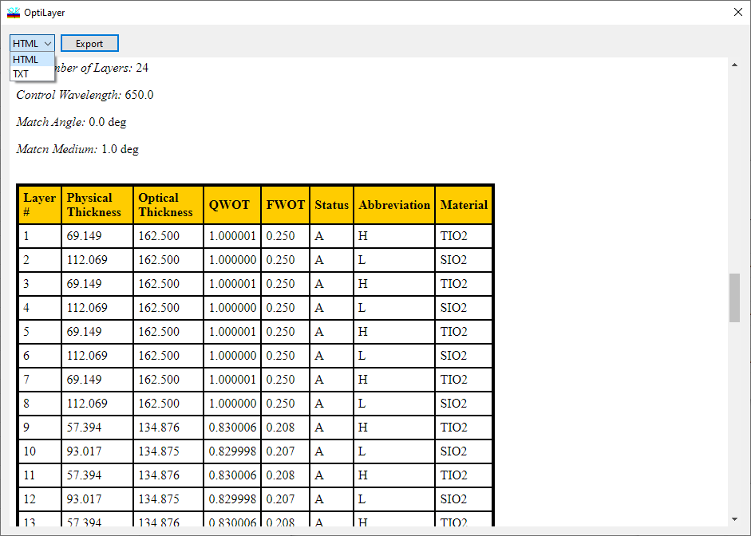
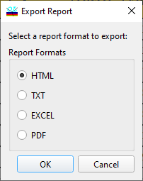
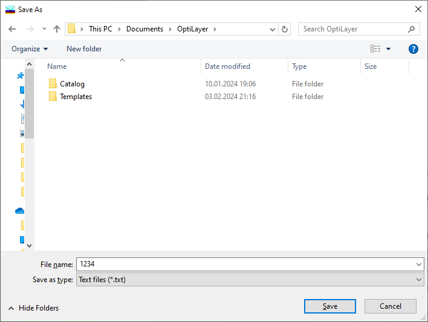

Output Window
Output Window
Navigation: OptiLayer Menu Commands > Results Menu >
Output Window
` <miscellaneousmonitoringoptio.html>`__ ` <idh_menu_results.html>`__ ` <exporttomsexceloptions.html>`__
Many commands in the Result menuopen the Output window. This window displays the results in HTML or TXT form. The type of output window display is selected in the upper left corner.

Results can be exported to MS Excel, PDF, TXT or HTML formats. To export, you need to click the Export button.

In this window, the user selects the desired report file format and, by clicking the “OK” button, saves the file to a convenient location on their computer.
